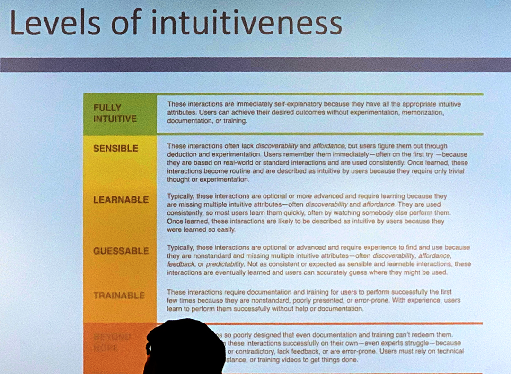
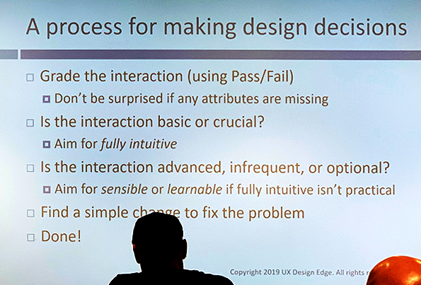

Last week I attended an event hosted by my local UXPA chapter (Front Range UXPA) titled “8 STEPS TO AN INTUITIVE UI”. The talk was presented by Everett McKay, author of Intuitive Design: Eight Steps to an Intuitive UI, wherein he introduces a framework of straight-forward principles used to achieve intuitiveness in a UI.
Before delving into the details, he advocated that we always first define what an “intuitive UI” is so then we could work towards achieving it:
A UI is intuitive when target users understand its behavior and effect without use of reason, memorization, experimentation, documentation, or training. (Everett McKay, 2019)
McKay argues that today's users expect to understand software intuitively, without relying on training or documentation. No longer are users satisfied with reading user manuals to figure out how to get their jobs done on computers.
Now that we've defined what it is to have an intuitive UI, how do we work towards achieving it? According to Everett McKay, we should evaluate a UI using the following principles:
-
Discoverability
Example: User is looking to search and finds the search box.
-
Affordance
Example: A button looks clickable.
-
Comprehensibility
Example: A save button is labeled something like “Save”.
-
Response Feedback
Example: User clicks on a button and the application provides immediate feedback.
-
Predictability
Example: The application shows presents the next UI in a process after the user clicks on “next” button.
-
Efficiency
Example: The user only had to click on one button to save.
-
Forgiveness
Example: The user can easily “undo” a mistake they did.
-
Explorability
Example: The user feels confident they can “click around” without getting lost.
Using these principles, we can then go through the process of making a UI intuitive, but that begs the question: how intuitive? Here are the levels of intuitiveness defined by Mr. McKay:
Finally, we can go through the process of improving the UI:
I hope some teams adopt this process to help make their apps more intuitive. I recommend buying Everett's book and attending one of his talks. He's been around the nation since last year, so if you're interested hopefully you'll find an event near you. Here are links for reference:
The book: Intuitive Design: Eight Steps to an Intuitive UX on Google
The event: Building an Intuitive UX Experience on GeneralAssemb.ly
Let me know what you think and if you need some extra support introducing these ideas to your team.